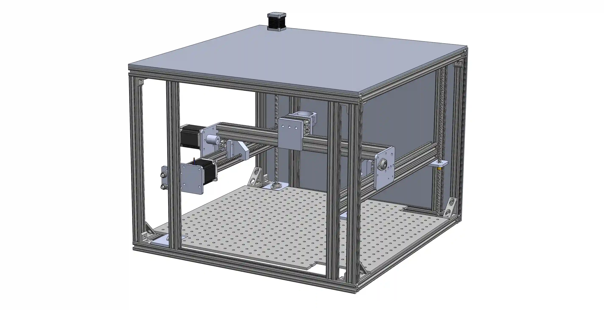
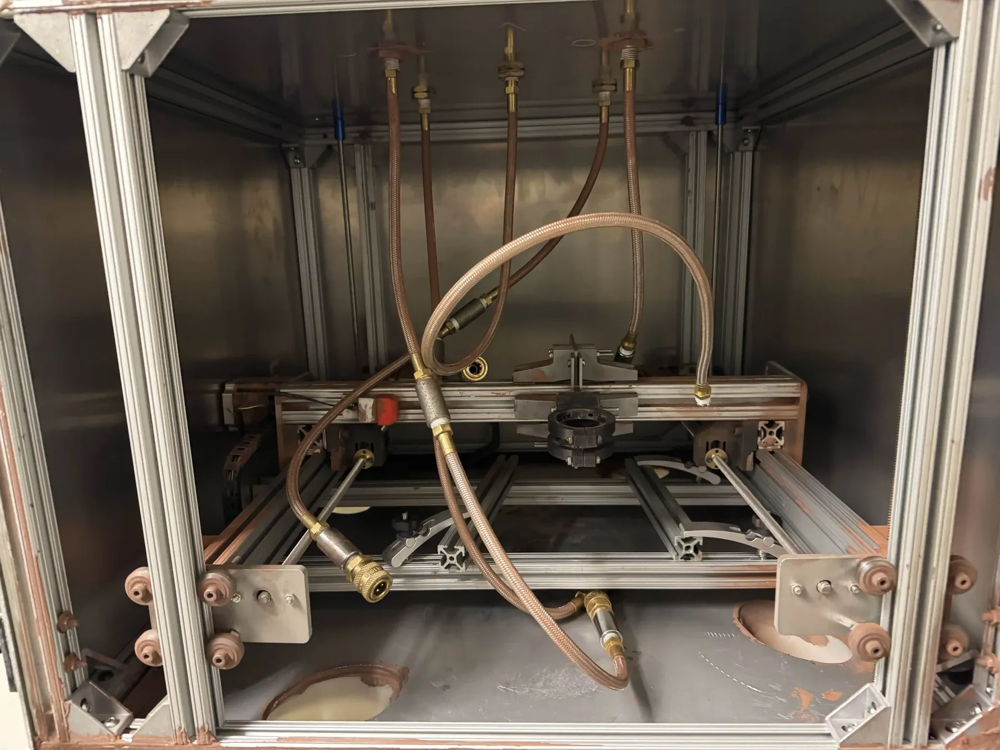
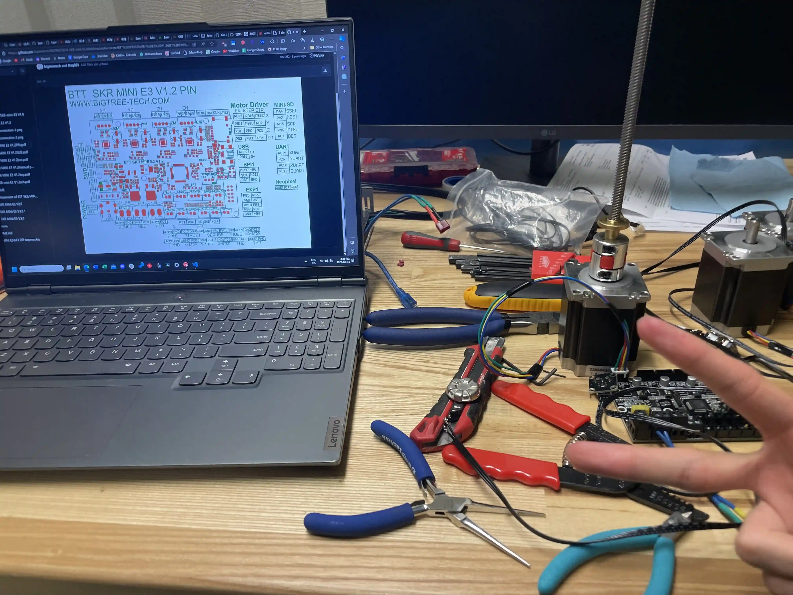

The DISC-A 01 is the first operational printer that DI Self Composite Alloys has produced. It is a 3 axis movement system, compatible with metallic 3D printing, I was contracted to design and build over the course of an 8 month school term. It was an interesting exercise in designing a classical system that would be operating in a relatively extreme environment.
Design Criteria
The DISC-A 01 printer had to be able to operate long-term in a harsh, metal dust filled environment.
- Size: The kinematic system needed to cover a 400x400mm build area for the intended tests.
- Compatibility: There are significant forces and wear involved with the printing process.
- Reliablilty: A repeatable accuracy of 0.05mm had to be achieved.
- Cost: This was done on a limited budget of 1000$.


First principles were used in the design of the frame and sizing of the steppers and lead screws.
Design and Operation Gallery
Most design decisions were geared towards simplicity and compatibilty, and the final design converged to that of a gantry-based coreXY system.


All moving parts and electronics were sealed against the environment or chosen to be compatible. For example, PTFE slides were used instead of ball bearings, and POM nuts instead of ball screws.


The system has run dozens of successful printing tests and has been in operation for over eight months.


Firmware and Electronics
Dozens of firmware iterations were written, all based on Marlin. The major difficulty was in getting the firmware operational with a unique dual Y axis and quad Z axis, and creating comaptibility with a system that did not have classical 3D printing elements. A final configuration was written for this custom movement system.


Most of the changes were made on actual operating hardware, to speed up iteration times.


The MKS Gen L and TMC2209 stepper drivers were chosen to run the printer hardware, and a custom power delivery system was also developed to power everything.


Manufacture and Assembly
The entire printer was designed to be manufactured and assembled by one person. All parts are either off the shelf, 3D-printable, or easily machined on a waterjet or mill.